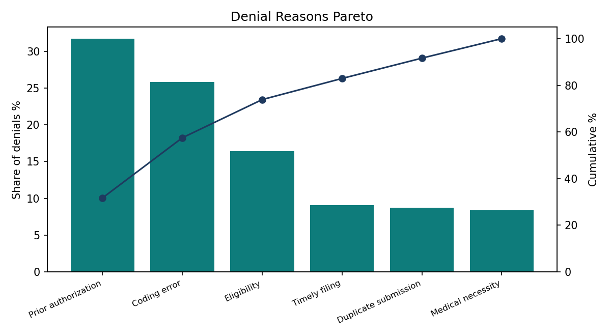
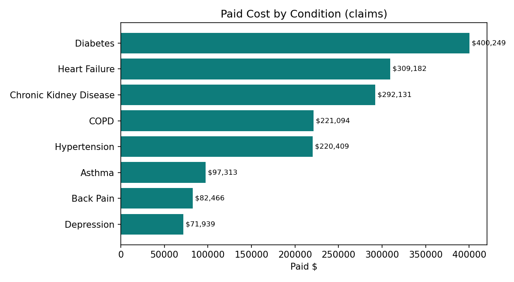
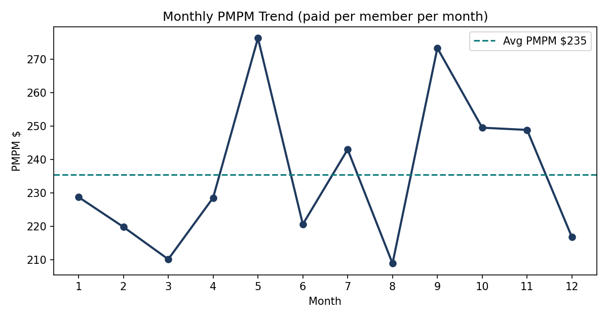
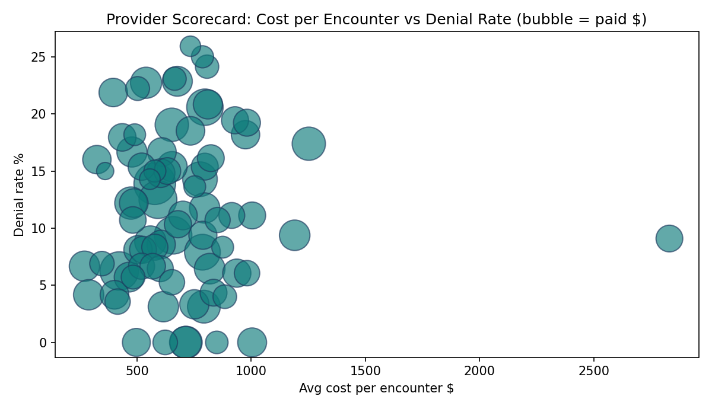

Module 1 — Claims & Revenue Cycle
Paid ratio 70.6%. Denials are concentrated: Prior authorization = 31.7% of all denials, then Coding error 25.8% and Eligibility 16.4% — a Pareto problem with a clear first fix.

Module 2 — Cost & Utilization
PMPM $235.39; average cost per encounter $686.15; 2,000 encounters per 1,000 members. Three chronic conditions — Diabetes, Heart Failure, Chronic Kidney Disease — drive 59.1% of paid cost.


| Condition | Claims | Paid $ | Share % |
|---|---|---|---|
| Diabetes | 510 | 400249.05 | 23.616532567910014 |
| Heart Failure | 266 | 309181.81 | 18.243147073729133 |
| Chronic Kidney Disease | 237 | 292131.38 | 17.23709337943087 |
| COPD | 276 | 221094.01 | 13.045562226155994 |
| Hypertension | 555 | 220408.53 | 13.005115757277052 |
| Asthma | 240 | 97313.28 | 5.741930546518839 |
| Back Pain | 196 | 82466.48 | 4.865901145001843 |
| Depression | 220 | 71938.76 | 4.244717303976266 |
Module 3 — Patient Outcomes
Readmission proxy 3.8% across all encounters and 25.5% for inpatient stays — the discharge-planning target. The top 10% of patients account for 25.7% of paid cost, defining the care-management cohort.
Module 4 — Provider Performance

Highest denial rate: PR073 (Orthopedics) 25.9%; lowest with 20+ claims: PR058 (Primary Care) 0.0%.
Top 5 providers by paid
| Provider | Specialty | Claims | Paid $ | Denial % | Patients |
|---|---|---|---|---|---|
| PR006 | Family Medicine | 36 | 45467.28 | 13.88888888888889 | 36 |
| PR055 | Endocrinology | 48 | 38868.91 | 6.25 | 46 |
| PR034 | Endocrinology | 40 | 37616.1 | 12.5 | 40 |
| PR059 | Nephrology | 32 | 36960.95 | 9.375 | 32 |
| PR045 | Endocrinology | 34 | 34794.36 | 20.58823529411765 | 33 |
Highest denial rates
| Provider | Specialty | Claims | Denial % |
|---|---|---|---|
| PR073 | Orthopedics | 27 | 25.925925925925927 |
| PR016 | Orthopedics | 24 | 25.0 |
| PR070 | Nephrology | 29 | 24.13793103448276 |
| PR072 | Nephrology | 26 | 23.07692307692308 |
| PR019 | Nephrology | 35 | 22.857142857142858 |
Full data, SQL, notebook and methodology: see README.md and outputs/ in this repo.